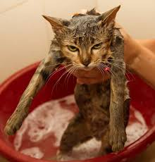

Коты (кошки)

Кто такой кот (кошка)?
Это одомашненные хищные млекопитающие семейства кошачьих, популярные животные-компаньоны, произошедшие от дикой ближневосточной кошки, ценимые человеком за охотничьи навыки и способность приносить радость
Случайные факты о котах (кошках)
- Всего существует 33 основных кошачьих породы. А количество домашних кошек в мире достигает 500 миллионов
- Если кошка шипит на человека, пришедшего к вам в дом, – человек настроен к вам недоброжелательно, если же ластится к нему – значит человек имеет добрые намерения
- Топить котят – в течение 7 поколений обречь свой род на возможные насильственные смерти в том числе и через утопление
- Усы у кошки всё время находятся в движении. Если кошка чем-то заинтересована – усы смотрят вперед, если усы смотрят назад – она чем-то напугана
- Кошки плохо различают мелкие детали, но довольно хорошо видят в темноте – им вполне хватает нескольких сотых от той освещенности, когда человеческий глаз уже перестает что-то различать во тьме
- За свою жизнь кошка может принести до сотни котят
- Дольше всех прожила кошка по кличке Puss в Англии. Она скончалась через пару дней после своего 36 дня рождения
- Самое большое число выживших котят в одном помете составляет 14 шт и было зафиксировано у кошки по кличке Bluebell в Южной Африке
- Хоть лев и считается царем зверей, но он не самый крупный представитель кошачьих. Гораздо крупнее льва тигры, вырастающие до трех метров и имеющие вес около трехсот килограммов. Тигр может съесть за один раз около 40 килограммов мяса
- У кошек потеют только подушечки на лапках
Почему кошки боятся воды?

Говорить о том, что многие кошки испытывают перед водой ужас и отвращение, не совсем правильно. Как и все живые существа, питомцы пьют воду, которая необходима для функционирования их организма.
Многие из них с интересом наблюдают за идущим на улице дождем, играют с льющейся из крана струей, с удовольствием утоляют жажду из питьевых фонтанчиков
Но почему же тогда мытье вызывает у котов столь сильный стресс? Связано это не столько с самой жидкостью, сколько с сопутствующими купанию факторами:
- Незнакомые звуки. Шум струи из крана или душевой лейки, всплески, бульканье — все эти звуки непривычны для питомцев.
- Потеря точки опоры.Зачастую хозяева ставят животных во время мытья на скользкую поверхность ванной. Лапы на ней разъезжаются, кошки не могут нормально стоять, поэтому начинают нервничать.
- Нарушение терморегуляции.Коты чувствуют дискомфорт и могут мерзнуть во время мытья, так как при намокании шерсти разрушается особый воздушный слой, который располагается в небольших промежутках между сухими шерстинками и поддерживает постоянную температуру их тела.
- увство уязвимости.Будучи мокрыми, кошки не чувствуют себя в безопасности: в таком состоянии они едва ли способны дать отпор при возникновении каких-либо внешних угроз.
- Посторонние запахи.Домашние кошки известны своей чистоплотностью. И без мытья в воде они постоянно следят за состоянием своего шерстного покрова, очищая его языком не только от загрязнений, но и посторонних запахов. Смоченная водой шерсть, напротив, пахнет еще интенсивнее.
Какие овощи и фрукты можно кошкам

По своей природе кошки — плотоядные хищники: основу их рациона должен составлять животный белок, главный источник которого — свежее мясо и субпродукты
Овощи играют дополнительную роль в питании животных, но их присутствие в рационе также является обязательным.
Польза овощей для кошек заключается в следующем:
- Присутствие в составе клетчатки.Она представляет собой растительное волокно, которое, создавая необходимый объем, препятствует возникновению запоров, а также помогает выводить из желудка и кишечника трихобезоары (комки шерсти)
- Высокое содержание воды. составе любых овощей эта жидкость занимает значительную часть, поэтому они особенно полезны кошкам, которые не слишком любят пить воду из миски
- Дополнительный источник витаминов и минералов.Овощи богаты различными витаминами, макро- и микроэлементами. И хотя степень их усвояемости невысока, они также приносят пользу организму
- Возможность регулирования пищевого поведения.За счет создаваемого клетчаткой объема овощи создают чувство насыщения, но имеют низкую питательную ценность. Это позволяет контролировать аппетит кошек с расстройствами пищевого поведения, а питомцам с ожирением помогает нормализовать вес тела
Не так давно ученые установили, что у кошек отсутствуют рецепторы, которые отвечают за восприятие сладкого вкуса. Поэтому, в отличие от собак, коты не воспринимают фрукты как лакомство, хотя и едят некоторые из них.
Какие фрукты можно давать котам и кошкам
- Зеленые яблоки — содержат меньше сахара, чем красные или желтые сорта. Богаты кальцием, витаминами С и К, пектином
- Бананы — содержат калий, витамины В и С, мягкую клетчатку
- Груши — богаты витаминами, минералами и клетчаткой
- Арбуз и дыня — отличный дополнительный источник воды